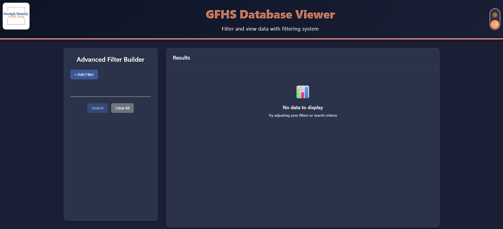

The Guelph Family Health Study (GFHS) is a research initiative based at the University of Guelph focused on helping families build healthy daily routines around eating, physical activity, sleep, and screen time. By partnering with families during the early childhood years, the study aims to reduce chronic disease risk as children grow.
From a computer science perspective, GFHS is involved in the management of large-scale survey data. Families contribute detailed responses through surveys at multiple time points, generating complex datasets that require careful cleaning so researchers can later use them for analysis.
My goals tied in really well with my main tasks — things like cleaning and organizing survey data, setting up a database so it was easy to use, and working with researchers to make the data request process smoother. On top of that, I even got the chance to go beyond what I had planned by building a web application that connects directly to the database, which made sharing and exploring the data much more user-friendly.
I wanted to sharpen my skills in data cleaning using R and Python, practice writing reliable SQL for joins and transformations, and improve how I communicate progress along the way. Working on this project gave me a lot of independence — I learned how to problem-solve on my own and take ownership of tasks from start to finish. It also pushed me to get better at explaining technical concepts in a way that non-technical team members could understand, which made collaboration smoother and more effective. These skills will carry forward into my next work experience by making me both more self-reliant and easier to work with across different teams.
I wanted to work with R and Python to really deepen my skills in cleaning and wrangling messy data, as well as with relational SQL databases to learn how to structure, join, and organize survey data from scratch. This was an area where I had very minimal prior experience, so it felt like a big step forward. I knew it was also a highly valuable skill set — being able to take raw data and turn it into something reliable and well-organized is essential for almost any data-driven role..
I was able to complete all of my initial goals, including collaborating effectively with the team, improving communication, and carrying out data cleaning and SQL workflow tasks. On top of that, we went beyond the original goals by starting development of a web application to make the database more accessible. Since this was an extra initiative, not all features could be added within the work term due to time constraints. However, we agreed that I’ll continue contributing to the app part-time whenever I have the chance, so it can keep growing and improving.
Database Developer
Focused on cleaning and standardizing raw survey data using Python and R, transforming messy inputs into reliable, well-organized datasets. I then built a structured database to store this data, making it much easier for researchers to access, query, and use in their work.
The freedom I was given to shape my work. Even though my role was focused on database development, when the idea popped up to build a web application to streamline the process of data access for researchers, the team supported the idea without hesitation.
By consulting with researchers and staff, I identified an inefficiency in data requests: full research plans were drafted before anyone knew how many records actually existed for the study (e.g., families at a certain time point or with specific characteristics). To address this, I designed and developed a web application that connects directly to the database. The app lets researchers apply their own custom filters and then dynamically generates SQL to instantly display the number of matching records. This allowed researchers to quickly see whether the data available was sufficient for their study idea, reducing wasted effort and enabling faster, evidence-based planning.
This work term strengthened my technical foundation and collaborative skills. I learned practical strategies for managing research data, improved my written communication through consistent updates, and delivered a tool that helps researchers quickly assess data availability. I leave the term more confident, with clearer methods for designing robust, user‑centered data workflows.